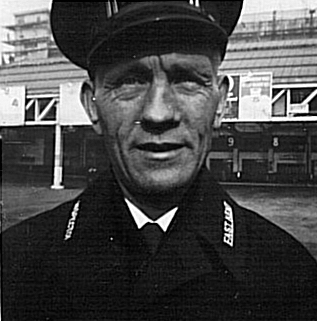
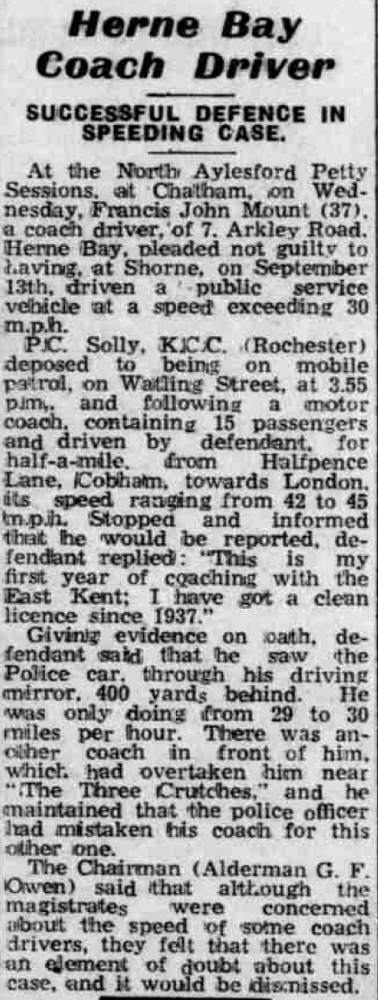
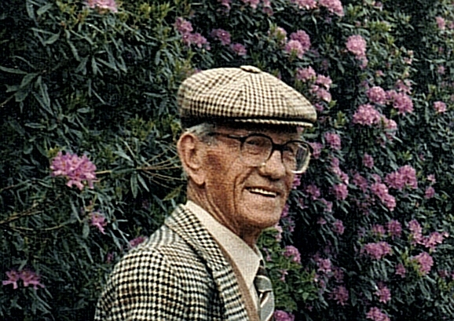

Francis John Mount 1911 - 1995
[ Home ] | [ Calendar ] | [ Surnames Index ] | [ Errors ] | [ Family History ]A motor coach driver mechanic and the youngest of 4 children of Edward Mount (a stoker gas) and Mabel Clarke, Francis Mount, the third cousin twice-removed on the mother's side of Nigel Horne, was born in Herne Bay, Kent, England on 17 Aug 19111,2,3 and. He married Queenie Hogben (with whom he had 1 surviving child, ) at St Martins Church in Herne Bay on 7 Sept 19354.
During his life, he was living at 7 Arkley Road in Herne Bay on 29 Sept 19391 and on 6 Nov 1948.
He died on 31 Jan 1995 in Canterbury, Kent, England3.
Parents
- Edward Thomas was born on 3 Mar 1879
- Mabel Minnie was born in 1881
Citations
- 1939 Register - Findmypast (was the head of the household)
- England & Wales births 1837-2006 - Findmypast
- England & Wales deaths 1837-2007 - Findmypast
- England & Wales Marriages 1837-2005 - Findmypast
Media
Francis John Mount

Whitstable Times and Herne Bay Herald - 6 Nov 1948

Francis John Mount - 2

England & Wales births 1837-2006 - BMD/B/1911/3/AZ/000963/063
England & Wales marriages 1837-2005 - BMD/M/1935/3/AZ/001082/137
England & Wales deaths 1837-2007 - BMD/D/1995/2/80926867
1939 Register Transcription - TNA-R39-1740-1740G-003-03
Family Tree

Map
Generated by ged2site. Last updated on Jul 3, 2024
Known Issues
Residence record for 6 Nov 1948 contains no citation
Listed in the residence for 6 Nov 1948, but spouse Queenie Hogben is not
No records of living with anyone